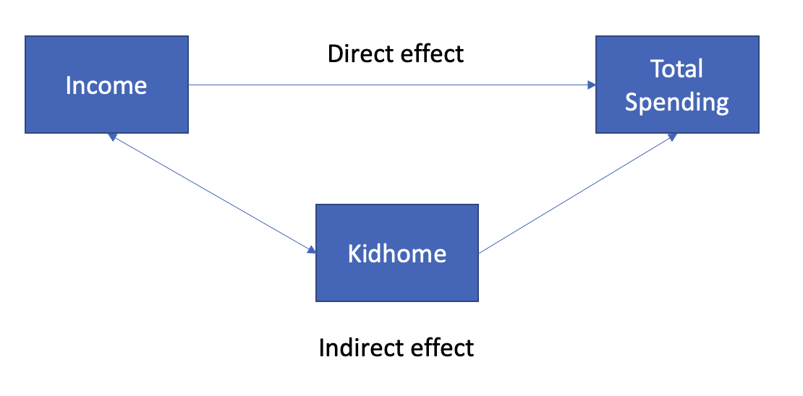
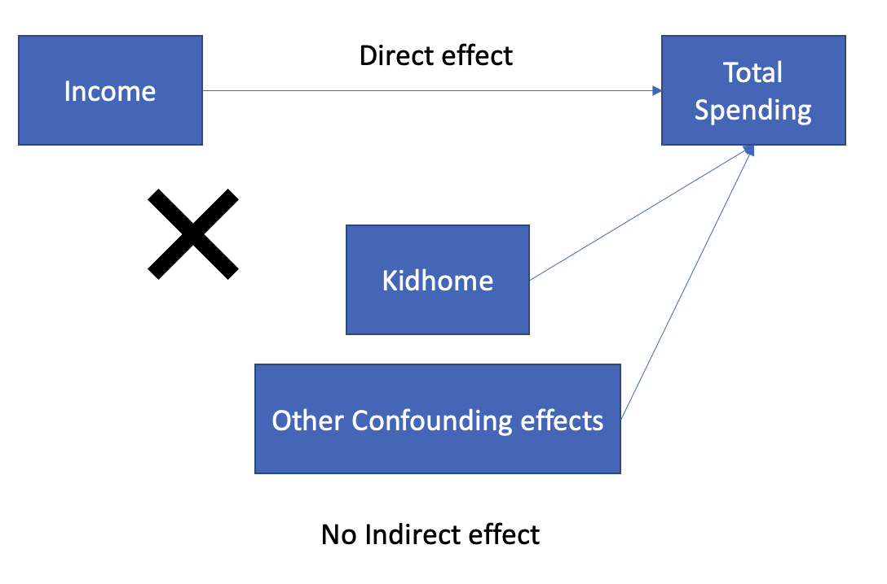

pacman::p_load(fixest,modelsummary)regression1 <-feols(data = data_full,fml = total_spending ~ Income )
Error in feols(data = data_full, fml = total_spending ~ Income): Argument 'data' could not be evaluated. Problem: object 'data_full' not
found.
regression2 <-feols(data = data_full,fml = total_spending ~ Income + Kidhome)
Error in feols(data = data_full, fml = total_spending ~ Income + Kidhome): Argument 'data' could not be evaluated. Problem: object 'data_full' not
found.
Error in sanitize_models(models): object 'regression1' not found
Question: if we want to evaluate income’s causal effect on spending, which value (0.022, 0.019) should we use?
1.3 Direct and Indirect Effects

Direct Effect (causal effect)
Keeping other variables fixed (ceteris paribus)
Direct effect only
Total Effect
Including side effects through other variables
Direct + indirect effects
1.4 Causal Inference from Regression Models
To obtain causal inference, we need to obtain the direct effects of an \(X\) variable on the outcome variable \(Y\).
Total effects include both direct effects and indirect effects (i.e., the impacts of other confounding variables).
Therefore, it is important to include all confounding variables, which affect income and total spending at the same time, to control for the side effects from other variables.
1.5 Practical Suggestions for Running Regression Models
For causal inference tasks, we need to use business senses to decide which confounding variables to control, but the safest way is to include everything we have in the data.
Sometimes, control variables may be statistically insignificant, they should NOT be removed because they still serve the purpose of control variables.
If some variables are mechanically correlated, then we should not put all of them in the regression, to avoid perfect collinearity problems.
Question: what is the best you can do with data_full to estimate the causal effect of income on spending?
1.6 Causal Inference from Regressions
Now we have included Kidhome to tease out the effect of kids, what problems do we still have which hinder us from getting causal effect of income on total spending?
Due to data availability, we are never able to include all confounding variables in the regression.
Strictly speaking, we can never obtain causal effects from simple regression models based on non-experiment data.
Mathematically speaking, because we can never control all confounding factors, the error term is very likely to be correlated with income, violating \(E[\epsilon|X] = 0\).
1.7 RCTs and Causal Inference
Why RCTs are the gold standard for causal inference?
If we are able to randomize people into different income groups, we can then collect the total_spending for each individual in each income group.
We can run a linear regression to examine the impact of income on total_spending.
Is \(Income\) correlated with any of the confounding effects?
1.8 RCTs and Causal Inference (cont.)

2 Endogeneity and Its Causes
2.1 Endogeneity
2.1.1 Endogeneity
Endogeneity refers to an econometric issue with OLS linear regression, in which an explanatory variable is correlated with the error term, such that the requirement for OLS linear regression \(E[\epsilon|X] = 0\) is violated.
2.2 Cause I: Omitted Variable Bias
2.2.1 Omitted Variable Bias (OVB)
An omitted variable is a determinant of the outcome variable \(y_i\) that is correlated with the focal explanatory variable \(x_i\), but is not included in the regression, either due to data unavailability or ignorance of data scientists.
Two conditions for omitted variable bias
The variable affects the dependent variable.
The variable is correlated with the focal explanatory variable.
2.3 Examples of OVB
If we would like to understand the causal effect of years in education on a person’s salary.
Very often, if we regress sales on price, we get a positive coefficient for price.
2.5 Cause II: Reverse Causality (Simultaneity)
2.5.1 Reverse Causality
Reverse causality refers to the phenomenon that the independent variable \(X_i\) affects the dependent variable \(y_i\) and the dependent variable \(y_i\) also affects the independent variable \(X_i\) at the same time.
2.6 Examples of Reverse Causality (Simultaneity)
Besides potential omitted variable biases, there may also exist reverse causality problems with marketing mix modelling.
Price affects demand, and demand affects sellers’ price setting decisions.
Higher price leads to lower sales. (X => Y)
If sellers expect higher demand, sellers may increase the price to increase profits. (Y => X)
2.7 Examples of Reverse Causality (Simultaneity)
UberEat interview question: If we have historical data on number of restaurants on UberEat in each month, and the total number of orders in each month, can we run an OLS regression to get the causal effect?